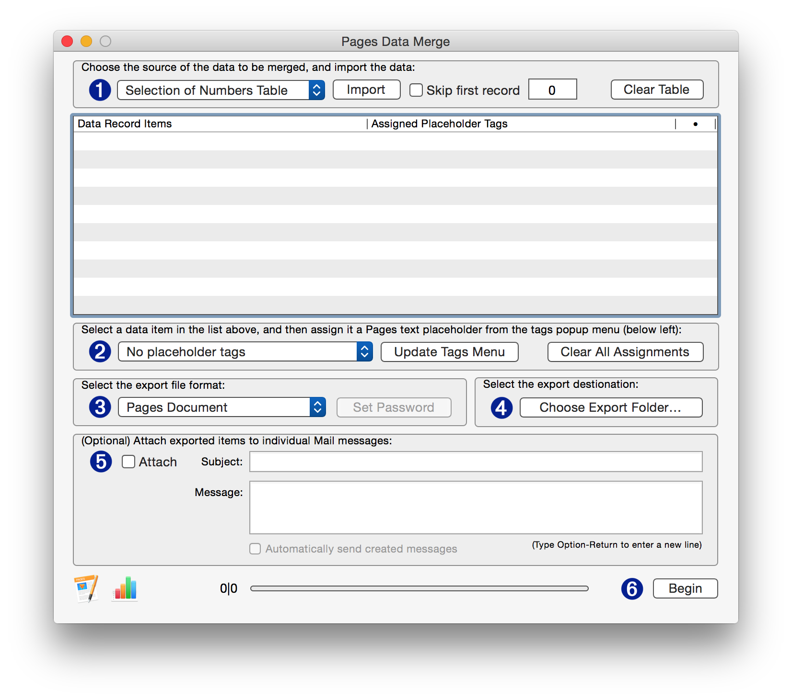

IMPORTANT: You can DOWNLOAD a beta version (2.1) of the Pages Data Merge application designed to work with macOS v10.4 Mojave. Its use requires the approval of three security dialogs, similar to this one:
Merging Data
A task often performed using productivity software such as Pages, is to create multiple documents based upon a template, where text placeholders in the template are replaced with data from a row of a spreadsheet. A Mail Merge is an example of this process.
While the ability to merge data with documents in not a feature available within the user-interface of the application, Pages includes scripting support for performing automated replacement of the content of text placeholders.
The Pages Data Merge application uses this specialized scripting support to make it easy for you to merge spreadsheet data with tagged Pages documents.

Preparation for Merging Data
Before running the Pages Data Merge application, make sure you have followed these steps in preparation:
- Add text placeholders to the document to be merged. Each text placeholder will be associated with the contents of a row cell from the imported spreadsheet data.
NOTE: Text placeholders used within tables or charts are not “visible” to scripts and cannot be used for data merging.
- Assign a unique Script Tag to each of the text placeholders, by selecting a placeholder and entering its related Script Tag in the text input at the bottom of the More tab view in the Pages document window. You can name the Script Tags anything you like, they don’t have to match the headers from the source table or data file.
- Save the Pages document to be used as the template, and leave it open. Close all other open documents.
IMPORTANT: The Pages document used as the merge template must NOT be password protected.
- Switch to Numbers, and select a range of rows from the table containing the data you wish to import. Don’t select any row or column headers, just select the data to be merged.
- Follow the instructions outlined in the movie below:
Download
The ZIP archive linked below contains the Pages Data Merge application and example Pages document and Numbers spreadsheet.
DOWNLOAD the Pages Data Merge application and example files shown in the movie above.
TIP: Here’s an easy way to combine PDF documents exported using the Pages Data Merge application into a single PDF file. Use this free and easy system-service.